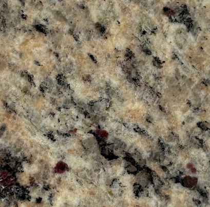
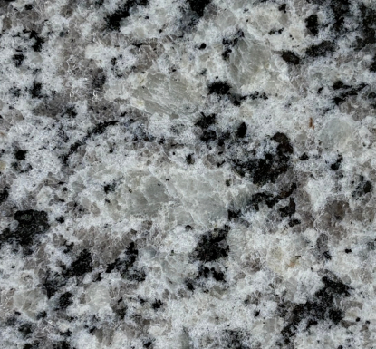
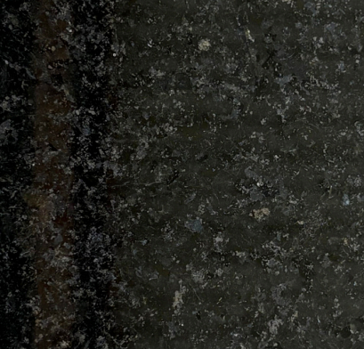
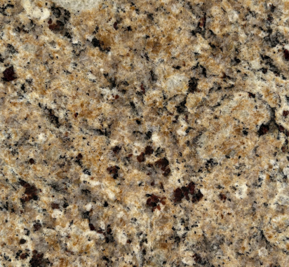
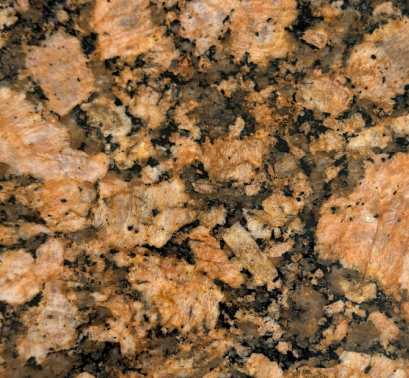
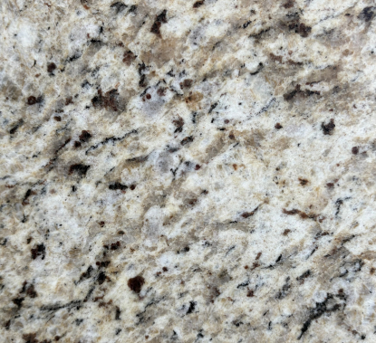
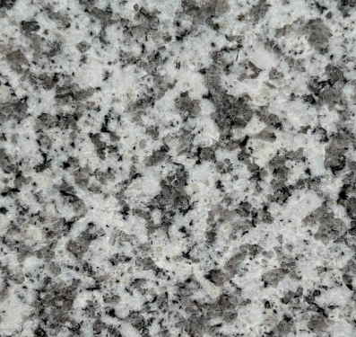
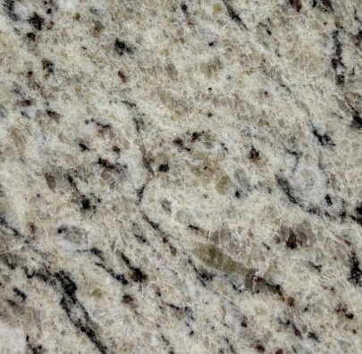
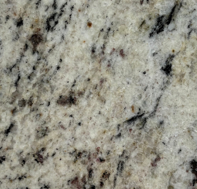
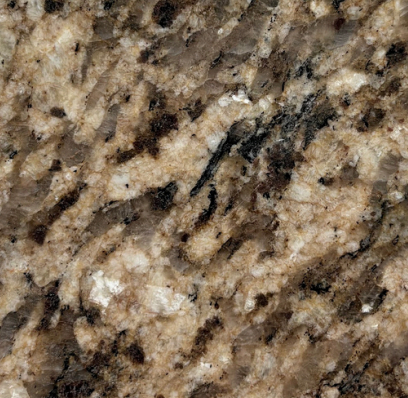

GRANITO
Granito y sobres de granito en Costa Rica.
Granito para superficies que requieren resistencia extrema, vetas naturales y un carácter sólido en cada volumen, ideal para cocinas, baños y proyectos premium.
Ideal para cocinas, barras y acabados que necesitan un acabado duradero y elegante.
Muestrario de Colores









